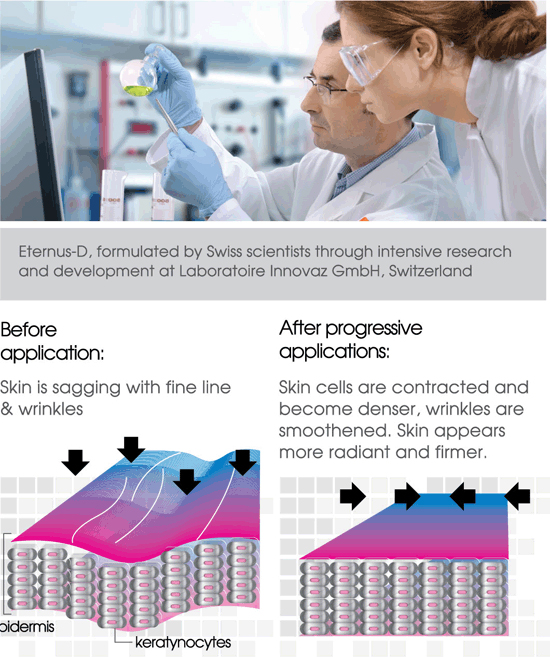

About Us
Discover your Eternal Beauty……Youth Reforming
Skin Aging
Healthy skin protects us from the external environment and prevents moisture loss.
At any age, healthy skin feels smooth, firm, moisturized and has even coloration.As we age, our skin encounters various afflictions such as dryness, dark circles under eyes, puffy eyes, fine lines, deep wrinkles, enlarged pores, dull skin tone, pigmentation, loss of firmness, etc. The aging process accelerates when skin is exposed to the following conditions:
- 1 , UV rays, environmental pollution and climate change.
- 2 , Work and stress, plus a hectic lifestyle with inadequate sleep.
- 3 , Unhealthy habits such as alcohol drinking, smoking, overeating, etc.
Beauty is Ageless………….
Beauty is ageless and true beauty is on the outside and the inside. It is really of great importance to maintain our skin’s barrier function and nourish skin from the inside for keeping skin healthier while nurturing a more youthful and radiant complexion.
The New Launch of Cosmeceutical Skincare - Eternus-D™
At Laboratoire Innovaz GmbH, Switzerland,a dedicated team of Swiss Scientistsequipped with years of experience and expertise, has done in-depth studies on cell regeneration and repair activation. Indeed, the Swiss Scientists combined the Purest Natural Ingredients, Advanced Skincare Technology and Custom Formulations and brought about a revolutionary line of Eternus-D™, a range of Cosmeceutical Skincare Products, which address both the inner and outer needs of the skin.
Cosmeceuticals are the new wave in skin care. They are topical cosmetic-pharmaceutical hybrids purporting to have medicinal properties. Made exclusively from pristine Swiss Alps Water, Skin Vitamins and Unique Active Essences, and formulated through intensive research and development at Laboratoire Innovaz GmbH, Switzerland, each product of Eternus-D caters to specific skin needs.
No Animal By - products / Derivatives
No Mineral Oil
No Petrolatum
No Triclosan
Eternus-D™ is the primary defense against anti-aging and helps restore skin’s youthfulness and vitality.
